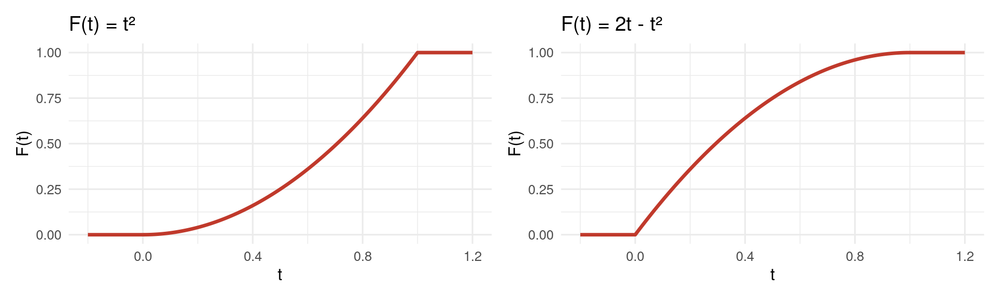

4.3 Função de distribuição acumulada
A FDA de uma variável contínua é a área acumulada até \(t\):
\[ F(t) = P(X \leq t) = \int_{-\infty}^{t} f(x)\,dx. \]
Ela é contínua, não decrescente, vai de 0 a 1, e
\[ F'(t) = f(t), \qquad P(a < X \leq b) = F(b) - F(a). \]
Exemplo: \(f(x) = 2x\) em \((0, 1)\). \(F(t) = 0\) para \(t < 0\); \(F(t) = \int_0^t 2x\,dx = t^2\) para \(0 \leq t < 1\); \(F(t) = 1\) para \(t \geq 1\). Exercício 3: para \(f(x) = 2(1 - x)\), \(F(t) = 2t - t^2\) em \([0, 1)\).

Figura 4.7: FDAs das densidades 2x (F = t²) e 2(1 - x) (F = 2t - t²).
Exercício 4. Seja \(f(x) = Cx\) em \([0, 1)\). a) Encontre \(C\). b) Encontre a FDA. c) Calcule \(P(0{,}2 < X \leq 0{,}4)\).
a) \(\int_0^1 Cx\,dx = C/2 = 1\), logo \(C = 2\). b) \(F(t) = t^2\) em \([0, 1)\). c) \(F(0{,}4) - F(0{,}2) = 0{,}16 - 0{,}04 = 0{,}12\).
Percentis pela FDA. O percentil \(p\) resolve \(F(q) = p\); a mediana, \(F(m) = 0{,}5\). Para \(f = 2x\), \(m = \sqrt{0{,}5} \approx 0{,}707\) (maior que a média \(0{,}667\)). Na fila, \(F(t) = 1 - e^{-0{,}2t}\): a mediana é \(5 \ln 2 \approx 3{,}47\) minutos e o percentil 95 é \(-\ln(0{,}05)/0{,}2 \approx 15\) minutos, o tipo de número usado em metas de atendimento (“95% atendidos em até 15 minutos”).